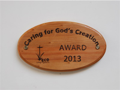
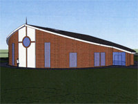

Kilbride Presbyterian Church
"To know Jesus and to advance His Kingdom"
Mission

Eco Church
On 26th May 2013, Kilbride was presented with an Eco-Congregation Ireland award. Find out more about the award, and what Kilbride has been doing to help the environment.
The Reid Family
Gary and Mary Reid have been serving overseas in Kenya since 2000. We have been supporting them as a congregation through prayer.

Community
Kilbride is closely linked with the Burnside Community Group, and often supports many of their activities and events.

Mullingar Presbyterian
Mullingar Presbyterian is the only Presbyterian Church in County Westmeath, Ireland. We are currently supporting the church in prayer.
Rosemary Gibson
Rosemary has been faithfully serving in Peru since 1975 as teacher and missionary on behalf of the Latin America Mission organisation.. We support Rosemary in prayer.
Mission Africa
Rosemary has been faithfully serving in Peru for years. We support Rosemary in prayer.
Eco Church
On 26th May 2013, Kilbride was presented with an Eco-Congregation Ireland award. Find out more about the award, and what Kilbride has been doing to help the environment.
The Reid Family
Gary and Mary Reid have been serving overseas in Kenya since 2000. We have been supporting them as a congregation through prayer.
Community
Kilbride is closely linked with the Burnside Community Group, and often supports many of their activities and events.
Mullingar Presbyterian
Mullingar Presbyterian is the only Presbyterian Church in County Westmeath, Ireland. We are currently supporting the church in prayer.
Rosemary Gibson
Rosemary has been faithfully serving in Peru since 1975 as teacher and missionary on behalf of the Latin America Mission organisation.. We support Rosemary in prayer.
Mission Africa
Rosemary has been faithfully serving in Peru for years. We support Rosemary in prayer.